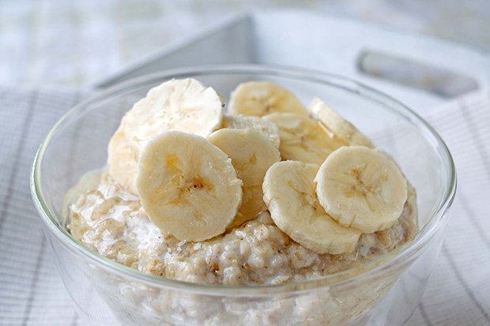

Porridge

Yummy porridge with bananas
This yummy porridge is easy to make and tastes delicious.
Perfect for breakfast or as a quick and tasty evening snack.
Ingredients
- 50 g oats
- 150 ml water
- 1 medium banana
- 50 ml cream
- 1 packet vanilla sugar
- 10 dashes of cinnamon
- 1 dash of cardamom
- 1 dash of cloves
- 1 pinch of salt
- optional: Nutella
- optional: orange sugar
Steps
- Add oats and water to a pot and bring to a boil
- Add vanilla sugar, cinnamon, cardamom, cloves and salt
- Bring pot to a simmer
- Chop banana into bite-sized chunks (e.g. 1cmx1cm) and add to pot
- Stir until porridge has reached desired creaminess
- Add cream and bring to a boil
- Remove pot from stove and pour porridge into bowl
- Optional: Stir in some Nutella and/or sprinkle orange sugar on top